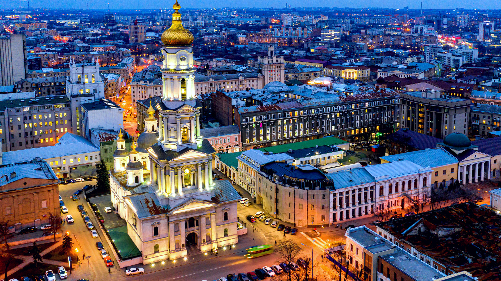

Харків по праву вважається одним із найвеличніших міст України, уособлюючи в собі потужну енергію розвитку, незламний дух та багатовікові культурні традиції. Розташований на мальовничих просторах північного сходу країни, він перетворився на справжній мегаполіс, де гармонійно переплітаються індустріальна велич, науковий інтелект та вишукана архітектурна естетика. Історія міста, заснованого ще у середині XVII століття, є яскравим свідченням того, як невелика фортеця здатна еволюціонувати у визначний європейський центр, що задає темп розвитку всій державі.
Сучасний Харків — це не просто промисловий гігант, а справжній інтелектуальний хаб, де зосереджені провідні вищі навчальні заклади, потужні наукові інститути та прогресивні інженерні бюро. Місто пишається своїми фахівцями, які формують майбутнє у різних сферах, починаючи від класичної науки і закінчуючи передовими технологіями. Унікальна атмосфера Харкова притягує талановиту молодь та амбітних професіоналів, створюючи умови для безперервного творчого та професійного зростання. Саме тут закладалися основи багатьох наукових відкриттів, що прославили наше місто на весь світ.
Архітектурний ландшафт Харкова вражає своєю багатогранністю: від монументальних споруд часів конструктивізму до затишних зелених парків, які стали улюбленим місцем відпочинку для багатьох поколінь містян. Площа Свободи, що є однією з найбільших у Європі, символізує відкритість Харкова до нових ідей та діалогу зі світом. Місто активно оновлюється, зберігаючи при цьому свою історичну ідентичність, що робить його унікальним поєднанням минулого, теперішнього та майбутнього. Це місце, де кожен гість відчуває ритм великого міста, сповненого історій, планів та яскравих перспектив.